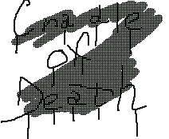

В. Д. Лукашенко
Колыбель смерти™
2010–2020
10th Anniversary
--Пролог--
Эта история поведает вам про события, которые случились в одном глухом городке, который находится в Финляндии. Молодой член некогда известной украинской организации С.Т.Р.Е.Л.А. уже не был на заданиях более чем 5 лет. Эту организацию отстранили от службы после их громкого провала в Германии. Тогда они пытались уничтожить террористов, которые планировали взорвать один город на окраинах вышеупомянутой страны. Их план оказался успешным. А все члены отряда просто сбежали... После этого случая, правительство Германии осудило правительство Украины и потребовало распустить "Стрелу"; сторона Украины конечно же согласилась. Теперь они были никем. Их пытались арестовать, но они скрылись в неизвестном направлении. Александр Вулканов, герой этой истории, уехал в Финляндию и жил в городе Хельсинки. Ему было 24 года. Он был высокого роста с светлыми волосами. Имел немного накаченное тело и его улыбка сводила с ума множество женщин... Но он не пользовался своим даром от природы, чтобы соблазнять их. Естественно, ему нравилось внимание со стороны слабого пола, но сильно им не обольщался, так как знал, что в скором времени встретит ту, единственную.
Глава 1.
Ранним утром одного дня, Саша проснулся от звонкого крика будильника. Сладко потянулся на кровате, встал и отправился туда, куда невозможно не завернуть утром. Умывшись он принялся изучать свой холодильник в поисках чего-нибудь съестного. Он нашел вчерашние бутерброды, которые приготовила ему его сестра Света, которая переехала в Финляндию ещё когда Александр начинал работать на "Стрелу". После провала их задания он отправился сюда только ради сестры. Ведь кроме неё у него больше никого не осталось. Света очень заботилась о брате, она его очень любила и ценила его существование.
Позавтракав холодными бутербродами, он неспешно начал одеваться. Сегодня был его первый рабочий день на новой работе. Он устроился работать охранником на частной стоянке и был вполне доволен заработной платой. Наступил вечер. Он вернулся уставший, отдав смену другому коллеге. Позвонил сестре, но она не брала трубку.
"...Хм, очень странно... В такое время она обычно дома и она всегда отвечает на телефонные звонки... Почему она не подходит к телефону?!". По Сашиному телу прошла холодная дрожь, которая заставила его отправится к ней домой. Она жила всего в пятьдесяти метрах от его собственного жилья и он добрался к ней на машине относительно
быстро. На улице стоял туман, было довольно прохладно и мерзко. Что-то подсказывало ему, что с сестрой произошло что-то неприятное. Добравшись до её дома он обнаружил, что свет в её окне не горел. Он поднялся по ступенькам к крыльцу дома, вытащил из под коврика маленький ключик и открыл дверь. Заначка была конечно смешной, но сестра была уверенна, что если воры заберутся в дом, то ключи им не будут нужны. Всё равно выломают дверь или пролезут через окно... Александр проник в дом. Было тихо и чертовски темно... Он нащупал рукой выключатель и зажег свет. Осмотрев дом, он понял что тут никого нет...
"Черт подери! Где она? Что с ней?! Она всегда вечером бывает дома..."
Эти мысли навели на него неподдельный страх за свою сестру...
Он зашел на кухню, там на кухонном столе он обнаружил записку: "Дорогой, Саша, я уехала в маленький городок Хилли-таун. За меня не беспокойся, я задержусь там на определенное время. Меня послали туда по работе.
Твоя сестренка Светка".
Волнение Александра не остановилось после прочитанных строк. Света работала помощником местного следователя, по этому неизвестно что могло её ожидать в неизвестном городке и для чего вообще, черт возьми, этот толстый ленивец её туда послал? Саша твердо решил отправится за ней. Он плюнул на свою новую работу так же легко как и попал туда.
Глава 2.
Приехав домой он начал собирать свои вещи в небольшую но вместительную сумку. Под кроватью он достал своё оружие, которым он гордился будучи работающим на "Стрелу". Этим оружием был девятимиллиметровый пистолет "Black Hawk", который он сам сравнительно долго доводил до ума. Под дулом ствола он установил лазерный целеуказатель; патроны он изготавливал сам. Калибр патрона оставался таким же 9мм, но улучшилась убойная сила. Пистолет был - просто загляденье. Саша чистил его до блеска. Достав коробку с боеприпасами он зарядил магазин дюжиной патронов. Именно столько вмещал в себя магазин этого пистолета. Собрав все вещи он вышел из своей уютной холостяцкой берлоги и направился в сторону своего внедорожника "Range Rover". Ехал он около двух часов. Ночная трасса была свободна. Туман опустился на дорогу. Впрочем неудивительно для Финляндии. Бензобак был почти пустым когда возле дорожного знака "Хилли-таун 10 км." Саша увидел бензоколонку. Подъехав к ней, прозвучал звук колокольчика где-то в помещении заправки. Саша прождал две минуты, но никто не вышел. Заправка не выглядела заброшенной, но никто не вышел обслужить только что приехавшего клиента... Его чутье ещё никогда не подвело его.
Оно подсказывало, что здесь что-то случилось.
"Вероятно грабители... Связали рабочий персонал, забрали деньги и смылись...". Разум Саши пытался найти хоть какое-нибудь объяснение, но мыслей было слишком много. Он взял свой пистолет, засунул его в пояс штанов и отправился в помещение заправки. Как только он открыл дверь, то скривил лицо от ужасного запаха гниения, который исходил от туда. Из служебного сортира слышалось едва различимое чавканье.
"Что тут творится? Страшно даже представить... Очень странные звуки..."
Как только он зашел в туалет, то его чуть не вырвало от увиденного: на полу лежал труп мужчины, который повидимому тут работал, и женщина в кровавой одежде разрывала труп на куски и поедала его... Источник этого запаха явно исходил отсюда. Женщина приподнялась на ноги и развернулась в сторону Саши. Он увидел её белые, бездумные глаза и испугался. В один момент он достал свой "Black Hawk" и послышался глухой хлопок. Саша попал ей прямо в колено левой ноги. Женщина издала яростный вопль. Она упала прямо на труп и начала ползти в сторону испуганного Саши. Даже на заданиях ему никогда не было так страшно как сейчас...
-Лежать, сука! - крикнул приказывающим голосом Александр. Женщину это не остановило. Она всё ползла к нему. Вскинув пистолет вниз он прицелился ей в голову и ещё один хлопок озарил тихое помещение. Темная
кровь мгновенно полилась из пробитого черепа пулей навылет. Вероятно она была очень прогнившей, иначе пуля бы не смогла пройти насквозь. Саша сел на пол, облокотившись на стену и всё ещё не мог поверить в увиденное. Его сердце не солгало ему, со Светой случилась беда. Саша сидел в шоке и вдруг увидел что труп мужчины начал двигаться. Он начинал вставать на свои костлявые ноги... Недолго думая Саша выпустил ещё одну пулю, которая преднамеренно попала в глаз существу.
"Этого просто не может быть... Мертвые не могут просто встать и пойти... Вероятно я схожу с ума... Или это просто кошмарный сон, который скоро закончится... Нужно ущипнуть себя и я проснусь!".
Ущипнув себя за руку он открыл глаза и увидел всё тех же двух трупов, вернее трупов трупов. Теперь они были полностью успокоенными. Тяжело выпустив воздух из легких, он встал и зашагал на выход. Заправил машину, не заплатив, ибо платить уже было некому, начал доезжать 10 километров, которые стояли на пути к Хилли-таун.
Глава 3.
Доехав туда, Александр не верил своим собственным глазам... Везде было темно и пустынно, никаких признаков людей и свет горел лишь в некоторых домах. Проезжая по одной из главных улиц городка, он увидел силуэты двух людей, в десяти метрах от своего внедорожника. Он остановился и вышел из машины, чтобы расспросить этих незнакомцев что происходит.
-Эй! Молодые люди! - крикнул Саша. Но они не оборачивались.
"Пьяные наверное, так смешно пошатываются при ходьбе" подумал Саша и улыбнулся. Подойдя к ним на расстояние в три метра он учуял всё тот же противный запах гнили, который удушал его сознание ещё там, на заправке. Он понял, что с городом определенно что-то не так, но больше всего он боялся за свою любимую сестренку, с которой одному Богу известно что случилось. Он крикнул: "Эй, вы, уроды!" и вонючая парочка обернулась. Небыло никаких сомнений - это были зомби. Саше было неприятно осознавать то, что их существование более чем реально. Его нервировало это слово, для него оно звучало как-то по-детски. По этому он начал про себя их называть ходунами. В темной, холодной и безлюдной улице послышались два оглушительных хлопка и появился две яркие вспышки одна за одной. Затем послышалась пара глухих звуков, будто два мешка с
картошкой упали по очереди с какой-то высокой полки. Саша пустил две пули обоим тварям в головы. В магазине ещё оставались патроны, но Саша не знал сколько в городе может находится этих ходунов, по этому он побежал к своей машине за боеприпасами.
-Десять, одинадцать, двенадцать. Всё! - тихо шептал Саша. У него снова был полный магазин патронов, но он решил что ему пригодится оружие "потяжелее", чем его собственное. Он сел в Рэнж Ровэр и поехал в магазин оружия, который обнаружил через навигационную систему GPS. Удивительным было то, что она ещё работала и показывала карту правильной, ведь этот городок был маленьким и затерянным в глуши Финляндии. По пути он встретил ещё пять существ, но они были сильно медлительными и он аккуратно объезжал их. Добравшись до магазина он увидел разбитую витрину и кровь на остатках стекла. Саша вообще был не из тех людей, которые при виде опасности убегают от неё. По этому он спокойно шел к витрине, держа пистолет на изготове. Он напоминал в некой степени терминатора, но при этом был обычным, живым человеком. С.Т.Р.Е.Л.А. всегда гордилась им и очень ценила его как члена команды. Он был самым элитным бойцом. Добравшись к витрине он взглянул в магазин. Там было пусто, но в углу валялись два трупа. Видно это был хозяин магазина и тот, кто убил его. Саша подошел ближе и увидел что трупы были убиты из мелкокалиберного пистолета...
"Кто-то остался ещё жив и не исключено, что это моя сестра" - пронеслось у него в голове. Саша не знал где искать сестру и куда ему идти, но сдаваться он также не собирался. Взяв с прилавка охотничий обрез он осмотрел его и подумал что это идеальное оружие для такого случая.
-Да, малышка, поохотимся немного.
Тихо с ухмылкой на лице проговорил он. Он нашел патроны и был безумно рад своей находке. Зарядив пару патронов в обрез, он сел на стол, достал пачку своих любимых сигарет "Parliament" и подкурил сигарету зажигалкой, которая была сделана в виде орла. Это был подарок сестры на его двадцатый день рождения. Он вспомнил этот момент и волна грусти накрыла его.
"Где же она? Нужно поскорее найти её и выбираться отсюда к чертовой матери". На горизонте он увидел тень мертвеца, который по видимому знал о его присутствии в магазине. Он направлялся сюда. Саша достал из кобуры, которую нашел в этом же магазине, свой "Black Hawk", включил лазерный целеуказатель и выставил перед собой руки. Маленькая красная точечка скользнула по тени, которая двигалась к нему. Сначала она покрутилась на животе этой твари, затем поднялась к горлу и лениво поползла к центру лба. Глухой хлопок из магазина - мешок с картошкой на улице. Именно такие звуки услышал полицейский, который находился поблизости. Он обрадовался этому, ведь знал что кто-то ещё живой рядом. Он начал идти
быстрее, перемещая свою вывихнутую ногу с адской болью. Александр услышал шаги живого человека, а не "танец мертвеца" и был этому безумно рад. Он вышел из магазина и направился к звуку шагов.
Глава 4.
-Я рад что хоть кто-то здесь остался в живых! - проговорил полицейский когда увидел Сашу.
-Потрудитесь мне объяснить, офицер, что здесь вообще произошло!
-Скажите ваше имя, чтобы я мог к вам обратится.
-Александр Вулканов, для вас просто Саша и можно обращатся на "ты". Мы ведь не в очереди за хлебом стоим.
-Мне очень приятно, Саша. Меня зовут Фич Фэрд. У вас необычное имя, вы... Эм, ты русский?
-Нет, я из Украины, но живу здесь уже пять лет.
-Я знал что ты не настоящий фин, у тебя акцент, но сейчас это не имеет никакого значения.
-Ненужно зря терять время, объясни что здесь происходит.
-Примерно три дня назад в городе начали появлятся эти существа... Я не знаю откуда они взялись, но это точно не к добру! Ты выживал здесь все три дня?
-Нет, я приехал сюда только что, чтобы найти свою сестру Свету. Её направили сюда по работе, но я знал что ей угрожает опасность.
-Послушай, приятель, я сейчас убегаю из города, но думаю что у меня не получится это сделать. Моя нога очень болит и передвигаться мне очень непросто. Я могу тебе помочь с поиском сестры.
-Ты знаешь что-нибудь?
-Да. Сегодня днём в город приехала молодая дама. Она была с нами в участке, она приехала действительно по делу но была очень напуганной. Мы защищали её там. Но они проникли во двор участка и я смылся оттуда и пытаюсь выбраться из этого чертового города. Если ты пойдешь в участок, то вероятно найдешь её там.
-Спасибо за информацию. Могу ли я...
Саша внезапно увидел за спиной копа два блестящих белых глаза, ходун схватил Фича и начал грызть его старое горло. Фич попытался закричать от резкой боли, но из его рта полилась кровь. Существо повалило полицейского на пол и начала разрывать его плоть. Саша быстро достал пистолет и с одного выстрела убил ходуна. Он упал прямо на полицейского, который явно был при смерти или в худшем случае трупом. Саша забыл поинтересоватся где находится этот участок, но тут же вспомнил про GPS в своём внедорожнике. Он ринулся к нему изо всех ног. Он быстро сел в него и увидел в зеркале заднего вида, что по улице шагало ещё больше тварей. Он завел машину и включил систему навигации. Обнаружил по ней местонахождение полицейского участка и поехал туда. Проезжая мимо трупа Фича он был ошеломлен: тот ходун, которого он убил всё так же лежал, но Фич ожил и уже пожирал его.
"Укусы! Точно! Вот как передается эта зараза. Я уверен в этом и мне надо быть предельно осторожным при встрече с ходунами". Сашины
мысли были чистой правдой. Последний раз он смотрел фильм про зомби очень давно и вот тут начинал вспомнимать детали этих фильмов.
"Чертовы сценаристы будто побывали здесь... Всё так сходится, будто я стал героем фильма ужасов..."
Глава 5.
Доехав до участка Саша увидел горящие машины и и десятки ходунов. Ворота были открыты и мертвецы вольно заходили в участок. Он услышал стрельбу из автоматических винтовок. Судя по звуку это были штурмовые винтовки M-16. Скорее всего это были полицейские, которые изо всех сил сдерживали волну ходячих трупов.
"Это конечно неплохо, но я не смогу пройти туда так легко. Я сразу попаду под раздачу. Надо что-то придумать.".
Посмотрев направо Саша увидел лестницу, которая вела на крышу.
"Ходуны врядли смогут по ней подняться, иначе они сделали бы это уже давно. Это мой шанс!"
Саша задавил одного ходуна, послышались два глухих удара: сначала от машины, а затем от стены, в которую угодил труп от отдачи. Саша остановился и вышел из машины. С собой прихватил три магазина к пистолету и взял обрез на плечо. Затем прицелился и выстрелил пять раз навскидку. Три пули попали некоторым трупам по ногам, а другие две пролетели мимо своих потенциальных мишеней. Саша побежал к
лестнице. Пробегая мимо какого-то складского помещения на него вылетела дверь, которую проломил ходун своим гниющим телом и повалил Сашу на землю.
"Неужели конец?!" - пронеслось в его голове. Одной рукой он достал с чехла на ноге свой нож, другой держа тварь за горло подальше от себя и отбросил её от себя сильным толчком руки. Монстр взвыл от боли - он упал на железный кусок арматуры, который торчал из стены. Саша подошел к нему и режущим движением ножа ударил ходуна в глотку. Кровь полилась фонтаном на Сашин рукав.
-Я сделал тебя, ты, урода кусок! - возгласил радостный голос Саши.
Дальше он направился к заветной лестнице. Он поднялся, посмотрел вниз - ходуны действительно не могли подняться к нему и выли от голода. На крыше обнаружилась дверь, которая вела в участок. Но она оказалась закрытой на навесной замок. Прицелившись в него, Саша выстрелил по нему и замок звонко вылетел. Он зашел внутрь и начал спускаться вниз, на первый этаж, чтобы узнать у копов подробней где находится его сестра. Спустившись вниз он понял, что полиция Хилли-таун лыка не вяжет. Они были в шлемах и средней защиты бронежилетах, у каждого была винтовка М-16 и в кобурах виднелись пистолеты "Beretta", калибра 9мм. Когда копы увидели живого человека, который стоял позади них то удивилсь.
-Кто ты? Как ты пробрался сюда?!
-По крыше, какое это сейчас имеет значение?
-Ты прав, никакого. Что делать
если ты инфицирован "болезнью мертвых"?
Копы были серьезно настроены и тот кто с ним говорил, лысый мужик, сжимал крепко в руке пистолет, был готов выстрелить в любой момент.
-Чёрт, на мне нет укусов! Можешь проверить! Я на вашей стороне!
Коп немного успокоился.
-Ладно, не кипятись! Ты пришел что-бы помочь нам сдерживать волну?
-Частично да. Что ты знаешь про Фича Фэрда?
-То, что он свалил отсюда и бросил нас! Ублюдок решил что сможет покинуть город. Да чтоб он сдох!
-Он уже сдох, но не полностью. - ехидно отозвался Саша.
-Это замечательно. Мы здесь уже три дня обороняемся. Еды и воды осталось совсем немного.
-Он рассказал мне, что сюда приехала молодая девушка. Это моя сестра. Ты знаешь где она?
-Да, она на третьем этаже прячется, со стволом в руках.
-Спасибо. Я схожу проведаю её?
-Как угодно.
Глава 6.
Саша побежал по лестнице на третий этаж.
-Света! Света! Сестренка!
-Саша? Я здесь!
Саша побежал к двери, из которой исходил её голос. Она выбежала, словно ужаренная. Саша обнял Свету и несколько секунд они стояли вот так, просто обнимая друг друга.
-Сашенька, прости меня!
-За что?
-За то что я не приняла во внимание то место, в которое меня послали.
-Глупая, мне не за что тебя прощать. Я рад что нашел тебя. Пора выбираться отсюда.
-Но нельзя оставлять такой кошмар нераскрытым. Мы должны будем сообщить об этом в полиции Хельсинки, а там они примут меры.
-Обязательно, но сначала мы должны отсюда выбраться!
-Угу
Они побежали на второй этаж, к той двери, через которую Саша забрался в участок. Подошли к лестнице, но там толпились ходуны.
-Хрень! Так мы не выберемся. Что же делать? -яростно сказал Саша.
-Я не знаю, нужно подумать.
-Черт! У меня не хватит патронов, чтобы всех их отстрелять от лестницы. Их слишком много!
Вдруг на горизонте появился черный вертолет. Он светил лампой прямо в них. На крыше участка была вертолетная посадка, по этому вертолет начал опускаться прямо на крышу. Саша и Света приободрились. Начали подниматься по лестнице. Вертолет сел, из него вышло пара человек в масках, бронежилетах и с легкими
автоматами.
-Садитесь. Мы увезем вас из этого ада.
-Хорошо. - отозвался Саша.
Они сели в вертолет и он начал подниматься.
-Неужели! Сам Александр Вулканов! Какими судьбами?
-Что..? Откуда вы меня знаете?
-Забыл меня за пять лет видать... Я, Сашенька, в сложившейся ситуации - твой шанс.
-Виктор Турко... Основатель отряда специального назначения С.Т.Р.Е.Л.А....
-Именно. Всё таки узнал. Не думал что обнаружу тебя именно здесь.
-Сам-то ты что здесь забыл?
-Как грубо, Саша. Я здесь искал обьяснение того, почему местный департамент полиции не выходил на связь. И как мне кажется, я понял почему. Завтра же всё зачистит специальная команда.
-Ты знаешь причины, по которым произошло всё это?
-Могу только догадываться. Раз уж мы встретились, то я хочу кое-что тебе предложить. Хочешь ли ты работать на меня? Выполнять несложные задания и получать нехилые денюжки? За это, я отмажу тебя от ментов и тебе не нужно будет скрываться.
-Хм, я подумаю над твоим предложением...
--Эпилог--
Киев. Саша живет вместе с сестрой. Он теперь может позволить себе всё. Ведь он теперь - наемник, который работает на бывшего босса - основателя отряда С.Т.Р.Е.Л.А.. Как он и обещал - работа не пыльная и хорошо оплачиваемая. Город был зачищен правительством Финляндии, но пресса раздула из этого большой скандал. Кто виноват в этой катастрофе - неизвестно. Если бы не Саша, то никто бы так и не узнал о происходящем и не исключено, что всё это могло бы повториться во всём мире...
